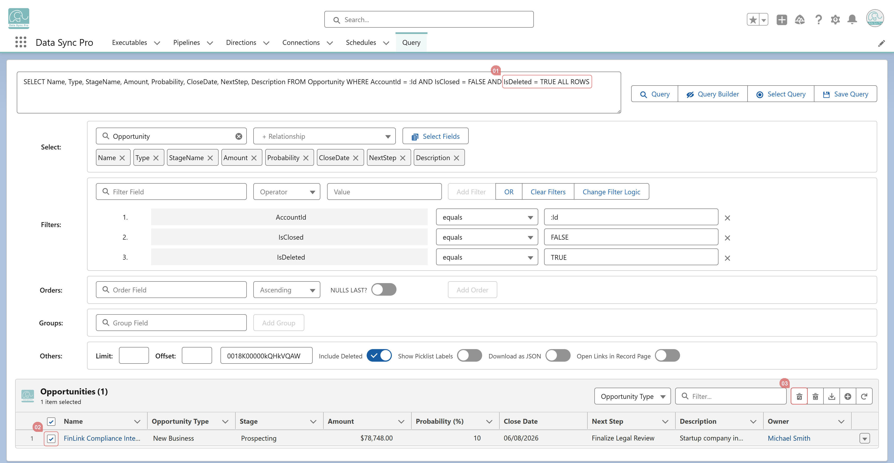

Yes. Add IsDeleted = TRUE to your filters and include ALL ROWS in the query to return deleted records. In Query Manager, select the records and apply Mass Undelete to restore them in one step.
IsDeleted = TRUE
ALL ROWS
